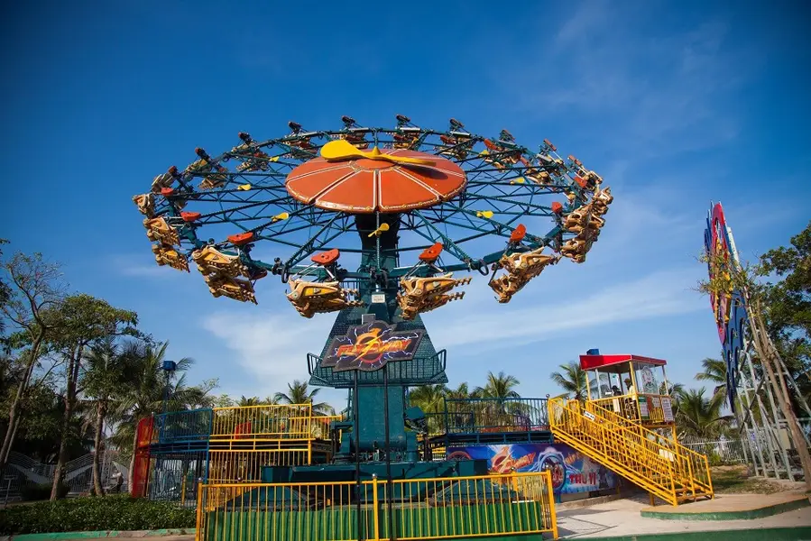
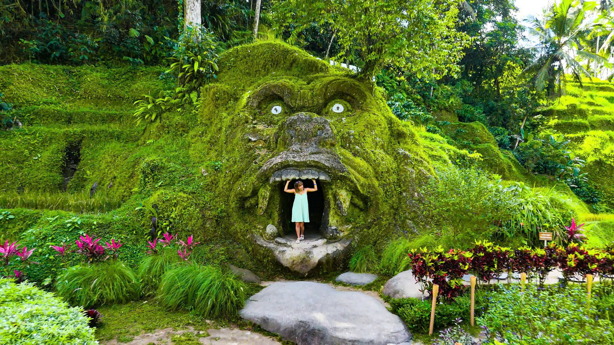
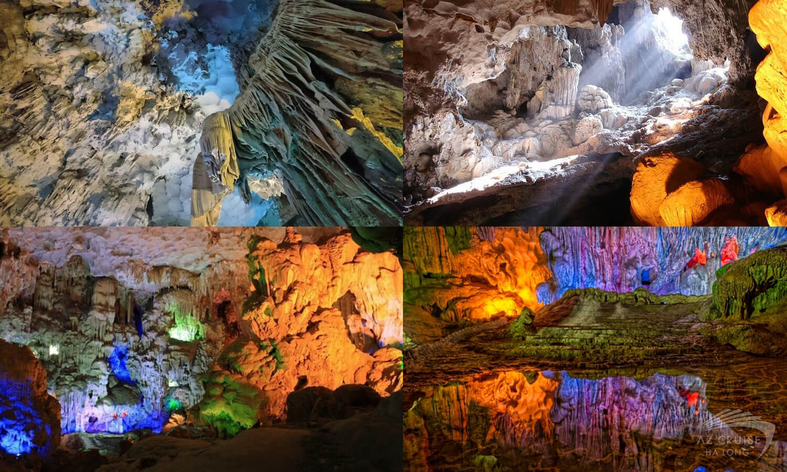
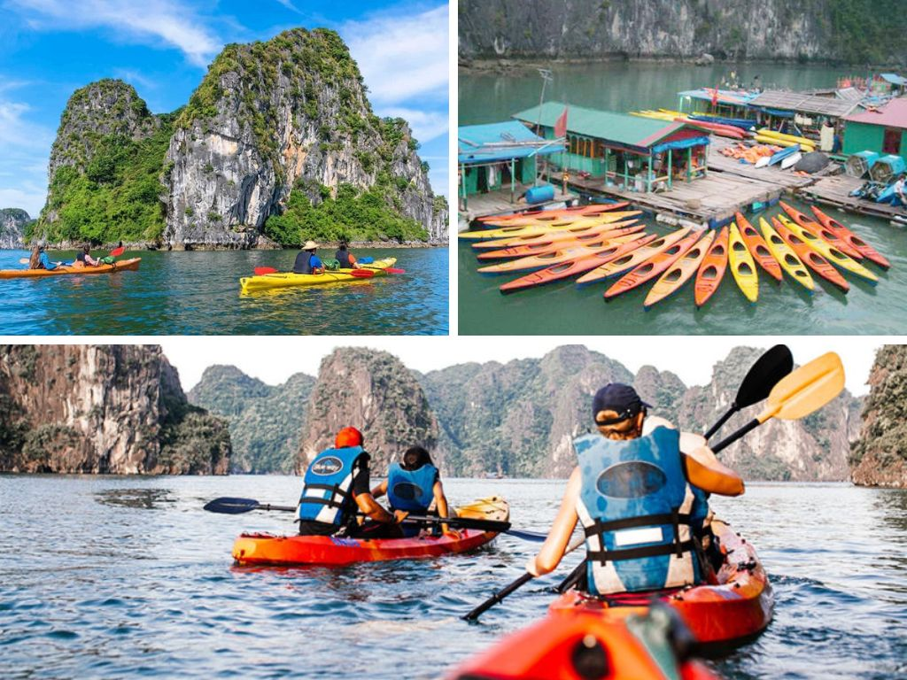
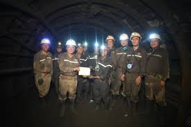
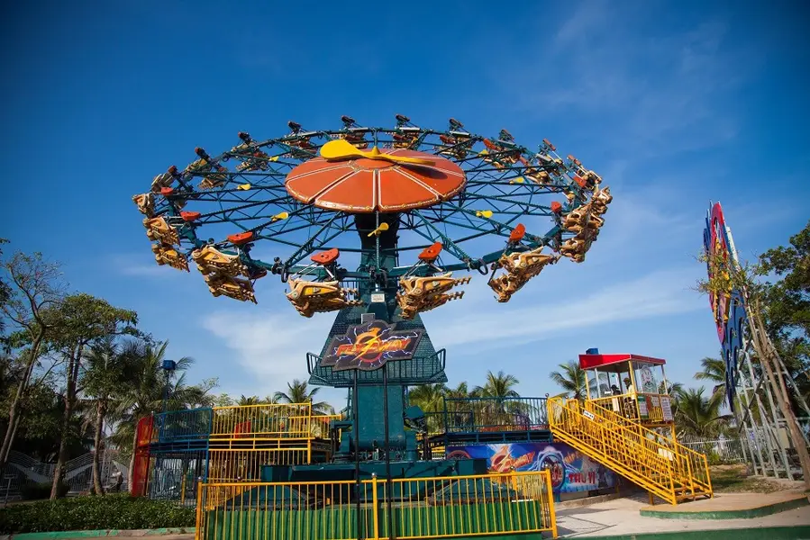
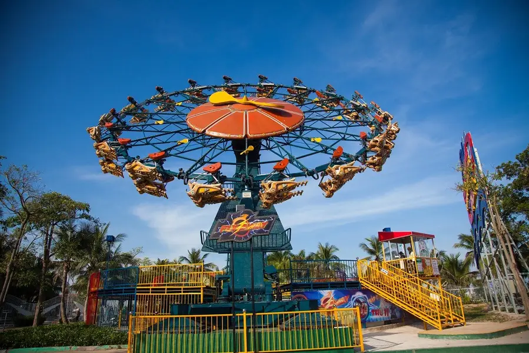

Khám phá Hạ Long ngoạn mục tìm hiểu nền văn hóa sôi động và bắt đầu những cuộc phiêu lưu khó quên với các tour du lịch có hướng dẫn viên

Cẩm nang du lịch Hạ Long
Lịch sử Hạ Long
Hạ Long, với vẻ đẹp kỳ vĩ và tráng lệ, là một trong những thắng cảnh nổi tiếng không chỉ trong nước mà còn trên thế giới. Được hình thành qua hàng triệu năm, nơi đây là minh chứng sống động cho sự biến đổi của vỏ trái đất, với các quá trình kiến tạo địa chất phức tạp, đặc biệt là trong các kỷ Ordovic và Neogen. Những dãy núi đá vôi trùng điệp, nhấp nhô trên mặt biển, tạo nên một bức tranh thiên nhiên tuyệt mỹ, làm say lòng bao du khách khi đặt chân đến đây.
Hạ Long không chỉ thu hút với vẻ đẹp tự nhiên, mà còn chứa đựng dấu ấn lịch sử văn hóa sâu sắc. Các di tích khảo cổ học cho thấy rằng khu vực này đã là nơi cư trú của con người từ thời tiền sử. Những nền văn hóa cổ như Soi Nhụ và Cái Bèo đã để lại những dấu vết quan trọng về cuộc sống của tổ tiên ta từ hàng nghìn năm trước. Những di chỉ này không chỉ phản ánh đời sống sinh hoạt, mà còn là những minh chứng về sự phát triển của nền văn minh sông Hồng từ rất lâu.
Trong suốt chiều dài lịch sử, Hạ Long còn gắn liền với những chiến công oai hùng của dân tộc. Đây là nơi đã diễn ra nhiều trận thủy chiến quan trọng, đặc biệt là trong thời kỳ kháng chiến chống ngoại xâm. Mỗi mảnh đất, mỗi dòng nước tại đây đều mang trong mình những câu chuyện lịch sử hào hùng, từ những cuộc chiến đấu bảo vệ tổ quốc đến những chiến thắng vẻ vang, góp phần viết nên những trang sử vàng của dân tộc.
Ngày nay, Hạ Long không chỉ là một kỳ quan thiên nhiên được UNESCO công nhận là Di sản Thiên nhiên Thế giới, mà còn là biểu tượng của văn hóa và lịch sử của đất nước Việt Nam. Hạ Long là điểm đến thu hút hàng triệu du khách từ khắp nơi trên thế giới. Du khách đến đây không chỉ để chiêm ngưỡng vẻ đẹp tuyệt vời của những hòn đảo đá vôi nổi bật giữa làn nước xanh biếc, mà còn để khám phá những giá trị lịch sử, văn hóa độc đáo. Các lễ hội truyền thống, các di tích lịch sử và những câu chuyện dân gian xung quanh Hạ Long vẫn tiếp tục là nguồn cảm hứng cho nhiều thế hệ, giữ vững giá trị cội nguồn và truyền thống văn hóa dân tộc. Hạ Long, qua bao thế kỷ, vẫn luôn là một điểm sáng trên bản đồ du lịch thế giới, không chỉ bởi cảnh quan thiên nhiên tươi đẹp mà còn bởi sự hòa quyện giữa giá trị lịch sử, văn hóa và thiên nhiên. Mỗi chuyến thăm đến Hạ Long đều mang lại cho du khách một trải nghiệm đầy ấn tượng và khó quên.
Hạ Long mùa nào cũng đẹp
The journey to the magical Ha Long.

Đắm mình trong không gian thiên nhiên Hạ Long
Hạ Long, với hai mùa sắc, mang đến những trải nghiệm du lịch đa dạng. Mùa hè rực rỡ (tháng 5-10) là thời điểm lý tưởng cho các hoạt động biển sôi động. Mùa đông yên bình (tháng 11-4) lại quyến rũ du khách bởi vẻ đẹp trầm mặc và không gian tĩnh tĩnh.
Vẻ đẹp rựa rỡ trong mùa hè sôi động
Mùa hè ở Hạ Long là con đường thiên đường của những trải nghiệm sôi động. Nắng vàng rực rỡ xuống làn nước biển xanh biếc, tạo nên khung cảnh tuyệt đẹp. Đây là thời điểm lý tưởng để bạn đắm mình trong suối nước mát lạnh, tham gia các trò chơi thể thao dưới nước sôi động, chèo thuyền kayak khám phá những hang động kỳ vĩ và thưởng thức hải sản tươi ngon. Không khí nóng nhiệt của mùa du lịch cao điểm sẽ mang đến cho bạn những trải nghiệm khó quên, những kỷ niệm mùa hè rực rỡ bên bờ biển..
Vẻ đẹp lặng lẽ, huyền bí và lạnh giá thật ấn tượng trong mùa đông.
Khi mùa đông đến, từ tháng 11 đến tháng 4, Hạ Long trở về yên bình và tĩnh lặng hơn. Tiết trời se lạnh mang đến cho biển một vẻ đẹp trầm mặc, lãng mạn. Đây là thời điểm lý tưởng để bạn du ngoạn vịnh cảnh, khám phá những hang động kỳ vĩ, tham quan các làng chài truyền thống và thưởng thức ẩm thực địa phương. Không gian tĩnh và ấm cúng sẽ mang đến cho bạn những giây phút thư giãn và tận hưởng vẻ đẹp của Hạ Long.
Quá trình di chuyển
Từ các tỉnh thành khác, cách thực tế nhất để đến Hạ Long là di chuyển bằng máy bay hoặc xe khách. Nếu bạn ở xa như TP.HCM hay Đà Nẵng, bay thẳng đến sân bay Vân Đồn là lựa chọn tối ưu, sau đó đi taxi hoặc xe trung chuyển khoảng 50km để đến Hạ Long. Với các tỉnh lân cận, xe khách là phương tiện phổ biến và tiết kiệm, có nhiều tuyến đi thẳng đến Hạ Long hoặc các thành phố lớn gần đó n rồi tiếp tục di chuyển bằng xe khách địa phương. Dù chọn phương tiện nào, thì việc di chuyển đến Hạ Long luôn đảm bảo chuyến thuận lợi.
Chơi gì
Thám hiểm những hang động
Hang Đá Hạ Long là một tuyệt tác thiên nhiên với những khối thạch nhũ kỳ ảo, lung linh dưới ánh sáng. Không gian trong hang rộng lớn, mát lạnh, vang vọng tiếng nước nhỏ tí tách và gió vi vu. Mỗi góc hang đều mang vẻ đẹp huyền bí, gợi lên những câu chuyện cổ xưa, làm say lòng du khách.

Chèo kayak
Tự do lướt trên làn nước xanh, mang đến cảm giác vừa phấn khích vừa thư thái. Khi tự tay điều khiển mái chèo, bạn sẽ thấy mình thật nhỏ bé giữa thiên nhiên hùng vĩ, lướt qua làn nước trong xanh và len lỏi vào những hang động huyền bí. Tiếng sóng vỗ nhẹ, gió biển mát rượi cùng khung cảnh thơ mộng khiến mọi mệt mỏi tan biến, chỉ còn lại sự tự do và hứng khởi đầy mê hoặc.

Tắm biển ở Hạ Long
Cảm giác sảng khoái khi đắm mình trong làn nước trong xanh, mát lạnh. Cát trắng mịn, sóng vỗ nhẹ nhàng cùng không khí trong lành tạo nên một không gian thư giãn tuyệt vời. Dù bơi lội, vui đùa hay đơn giản là nằm dài trên bãi biển ngắm hoàng hôn, bạn đều cảm nhận được vẻ đẹp yên bình và quyến rũ của Hạ Long.
Làng chài nổi
Trải nghiệm làng chài Vung Viêng, Cửa Vạn giúp du khách khám phá cuộc sống ngư dân giữa vịnh Hạ Long. Ngồi thuyền nan dạo quanh những ngôi nhà nổi, bạn có thể xem ngư dân kéo lưới, câu mực và thử chèo thuyền. Giữa không gian yên bình, bao quanh là núi đá vôi hùng vĩ, làng chài mang đến cảm giác thư thái và những kỷ niệm đáng nhớ.
Thưởng thức ẩm thực
Những trải nghiệm khó quên với những món hải sản tươi ngon. Chả mực giòn dai, bề bề hấp ngọt thịt, sá sùng nướng thơm lừng hay cua ghẹ chắc thịt đều hấp dẫn. Hương vị biển cả đậm đà khiến ai cũng muốn quay lại thưởng thức lần nữa.
Gợi ý những địa điểm thăm quan nổi bật mang đậm dấu ấn Hạ Long.
- Thanh niên Hạ Long tích cực tham gia vào các hoạt động đổi mới và phát triển địa phương, đặc biệt trong chuyển đổi số. Họ thành lập các tổ công nghệ số cộng đồng, triển khai mô hình tình nguyện số, góp phần xây dựng thành phố thông minh. Đoàn Thanh niên cũng tổ chức các hoạt động hỗ trợ thanh niên lập nghiệp và phát triển kỹ năng nghề nghiệp.
- Thành phố Hạ Long đã tạo việc làm cho 1.534 lao động trong những tháng đầu năm 2024, đạt 22% kế hoạch năm. Tỷ lệ lao động qua đào tạo đạt 90,43%, trong đó 75,32% có bằng cấp, chứng chỉ, phản ánh sự chú trọng vào phát triển kỹ năng nghề nghiệp.
- Hạ Long chú trọng xây dựng Đảng và hệ thống chính trị, tổ chức nhiều đợt sinh hoạt chính trị để quán triệt quan điểm của Đảng. Thành phố cũng tập trung xây dựng quốc phòng toàn dân, hoàn thành giai đoạn 1 căn cứ chiến đấu và triển khai giai đoạn 2 để đảm bảo an ninh và phát triển bền vững.

Xem nhận xét đánh giá tích cực từ trang thông tin điện tử
Khám phá Hạ Long qua trang web của Vịnh Hạ Long mang đến cho tôi cảm giác chân thực và cảnh đẹp của Hạ Long. Hình ảnh tuyệt đẹp và thông tin sâu sắc đã giúp tôi lên kế hoạch cho một chuyến đi khó quên. Rất khuyến khích cho bất kỳ ai muốn trải nghiệm sự kỳ diệu của Quảng Ninh.
- An Phạm
Trang web du lịch của
Vịnh Hạ Long là viên ngọc quý để khám phá Hạ Long. Những bức ảnh đẹp ngoạn mục và gợi ý hành trình dễ thực hiện giúp tôi lập kế hoạch du lịch một cách liền mạch. Đây là nguồn tài nguyên vô giá để nắm bắt được bản chất của những kỳ quan thiên nhiên Quảng Ninh!
- Linh Trân
Trang web của Vịnh Hạ Long giới thiệu vẻ đẹp của Vịnh Hạ
Long một cách tuyệt vời. Hình ảnh sống động và hướng dẫn chi tiết giúp việc lập kế hoạch cho chuyến đi trở nên dễ dàng. Đây là nguồn tài nguyên không thể bỏ qua cho bất kỳ ai háo hức khám phá cảnh quan tuyệt đẹp của Quảng Ninh.
- Minh Nguyên
 
